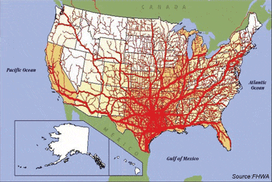

During the late 19th century, the USA became an industrial powerhouse, its manufacturing capacity becoming among the world’s foremost. During the late 20th century, industry was disappearing at an alarming rate. Countless mill towns and even some major cities were blighted, a trend naming a broad region: the Rust Belt. Globalism caused this devastation. The British can tell a similar story.
Just as Communists once proclaimed that socialism was inevitable, the free trade fanatics insist that globalism is the only possible way. Overpaid CEOs join the chorus, moaning that American workers are too expensive. Contrary to what the talking heads think, it wasn’t always like this. Let’s see what we can learn from history and explore a reasonable compromise.
How it rolled in the Renaissance
It’s all about keeping this stuff circulating within your own country.
The trade doctrine of mercantilism included the following features:
- High tariffs
- Forbidding colonies to trade with other nations
- Monopolizing markets with staple ports (the public can buy goods passing through the city)
- Banning the export of gold and silver, even for payments
- Forbidding trade to be carried in foreign ships
- Subsidies on exports
- Promoting manufacturing through research or direct subsidies
- Limiting wages
- Maximizing the use of domestic resources
- Restricting domestic consumption through non-tariff barriers to trade (such as regulations and quotas)
This wasn’t an elaborate doctrine originating from theory. This developed from nations doing what was in their economy’s best interests, and only later did theoreticians document it. Basically, this represents trade protectionism and hard-nosed business practices to keep wealth circulating within their country rather than flowing out of it. Note also that today’s economic policies take the opposite approach—except, of course, for limiting wages.
Eventually, Adam Smith’s ideas friendly to free trade prevailed. Lately, economic whiz kids give mercantilism a pretty bad rap. Nations doing what’s in their economy’s best interests? What? Oh hell no, we can’t have that!
Mercantilism has been criticized for leading to wars. Well, has anything improved lately? Banksters love wars (be they worldwide catastrophes or prolonged spit-in-your-eye wars), and so does the military-industrial complex. Individual businesses often benefit too.
Globalist hubris

“We have got to stop sending jobs overseas. It’s pretty simple: If you’re paying $12, $13, $14 an hour for factory workers and you can move your factory South of the border, pay a dollar an hour for labor, have no health care, no environmental controls, no pollution controls and no retirement, and you don’t care about anything but making money, there will be a giant sucking sound going south.” —Ross Perot
Item 5 from above is of particular interest. It would be a hard sell to insist all container ships be American-operated. However, it’s rather galling that the government started allowing Mexican trucks to ship cargo inside the USA, to cut American truck drivers out of their piece of the action. To facilitate NAFTA imports, the federal government spent taxpayer money to build Interstate 69 (quite a symbolic number).
More ambitious plans for the “SHAFTA Superhighway” haven’t come to pass. This would’ve included a mega-scale walled-off toll road up to four football fields wide, with tributaries bound toward all corners of the USA, carrying Chinese goods shipped in from a Mexican port (cutting out American dock workers too), with Mexican customs officials in a Kansas City “SmartPort”.
Interestingly, the lefty magazine The Nation wrote an article beginning with how all that was a crazy right-wing conspiracy theory. Then the article reversed direction, describing how politicians were working on plans for pretty much all that, until citizens raised holy hell. Really, liberals should be just as concerned—aren’t they supposed to be all about protecting the common people from predatory plutocrats? Well, so the theory goes.
Other than that, we haven’t traded our dollars out for “ameros” yet. However, ultra-wealthy globalists certainly do have ambitions to erase the USA’s borders and create a “North American Union“, eventually to include Central and South America. Actually, that’s exactly what Leon Trotsky wanted too. Strange, that.
American tariff policies, past and present

It wasn’t always this way.
In 2010, tariffs (averaging 1.3%) were 1.2% of US revenue. Back in 1860, tariffs (averaging 15%) funded 94.9% of the federal budget. Fifteen percent? How punishing! Imagine going to a big box store and paying $11.50 instead of $10.13 for $10 of foreign merchandise—zOMG!
About a century ago, the federal government got hooked on income tax, and it’s never been the same since. I’m not saying we can return to 1860s standards and maybe even abolish the income tax. That only could happen if the government quit fighting spit-in-your-eye wars, paid down their astronomical debt, weaned the public off the welfare tit, and fixed government waste. How awful—hell no, we can’t have that!
Free trade is great for multinational business owners, but not so good for labor. At this, free trade zealots often scoff, “What, you’re saying American workers can’t compete?” Well, of course we could, if we brought back sweatshops, starvation wages, no pollution controls, 12-hour workdays, goon squads, etc. Sounds awesome! Another problem is that when a huge trade imbalance persists, wealth gets sucked out of one country and poured into another, at least until conditions in both places meet in the middle and the trade imbalance begins to even out because of that “invisible hand” mojo.
The meddlesome globalist CEOs swim in gravy, but how does the public really benefit? Jobs in factories and call centers have been moving overseas steadily for decades. Slightly cheaper merchandise at Wally World isn’t much good for those who can’t find work.

The economy has been pozzed out to varying degrees since 2001. Wall Street has bounced back (and gained quite a bit more) from after the banksters and Wall Street crashed the economy in 2008. Unfortunately, things haven’t fully recovered for the real people, despite improving somewhat lately.
Following the 2008 disaster, multitudes of formerly working people had to get on public assistance, no matter how galling it was. For one example, during 2009, the number of disability applicants rose by about a fourth—coincidence? Desperation was in the air while talking heads spoke of the economic “new normal”.
Today, the World Trade Organization is running the international commerce show, surely with many grubby globalist fingers in the pie. Countries with Most Favored Nation status must have the same standards applied, whether they’re industrialized countries like ours, or places where laborers toil in horrible sweatshops for a tiny fraction of our minimum wage. Well, to hell with all that!
A trade policy to protect jobs here and promote progress abroad

Penalizing starvation wages and exploitation could help the world’s downtrodden.
Here’s a better proposal:
- Baseline 2% tariff, including not just manufactured goods but “offshored” services
- 2% more for countries with a minimum wage under 60% of ours, per the official exchange rate
- Additional 2% more for countries with a minimum wage below 30% of ours
- 2% penalty for those without reasonable environmental protection
- 2% penalty for those with regressive labor practices (organized labor forbidden, unsafe factories, etc.)
- 5% penalty for severe exploitation (legally mandated social immobility child labor, exorbitant predatory lending / debt bondage, toleration of slavery, etc.)
So according to this sliding scale, decently-run industrialized countries get the 2% rate, and the worst get the “punishing” 1860 rate of 15%. This would reduce incentives for globalists to move jobs wherever they can pay the fewest peanuts. There would be plenty of free trade between countries with similar wages and labor standards. Goods from elsewhere still would be obtainable, though at up to 13 cents on the dollar more.
Would this hurt Third World countries? Actually, this would provide incentives for their leaders to stop treating their workers like dirt. (Compliance checks would be required; having enlightened laws on the books that never get enforced doesn’t count.) A badly-run country could knock one third off of their tariff simply by abolishing unconscionable practices.
An added benefit is that incentivizing livable wages and reducing exploitation might improve conditions in the Third World. Now, destitute masses flee by the millions to First World countries. Some compete for jobs with the citizens, but others live off the welfare tit, cause trouble, and outbreed the locals. Indeed, as devastating as free trade favoring the absolute cheapest labor markets has been, population replacement immigration is globalism’s worst crime.
Read More: Global Elites Caught Plotting The Islamic Invasion Of Europe